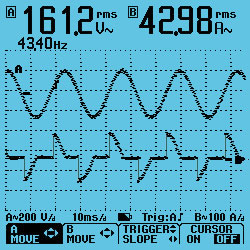
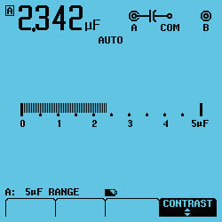
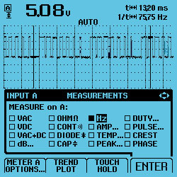
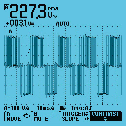
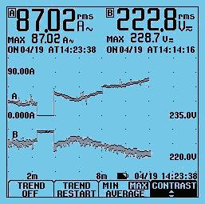
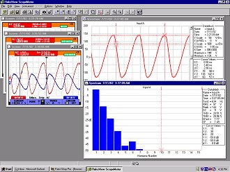

|
|
|
ScopeMeter® Série 120: La simplicité d’un trois-en-un
La série des ScopeMeters 120 constitue une solution robuste pour le dépannage des installations industrielles. Outils de mesure véritablement intégrés, ils regroupent un oscilloscope, un multimètre numérique et un enregistreur « sans papier » en un seul instrument abordable et simple d’utilisation. Trouvez des réponses rapides à tous types de problèmes – équipements, instrumentations, systèmes de commande et d’alimentation.

|
 ScopeMeter® Série 120 : Aussi simple que de compter jusqu’à trois ! ScopeMeter® Série 120 : Aussi simple que de compter jusqu’à trois !
- Oscilloscope numérique à deux canaux 40 MHz et 20 MHz
- Deux multimètres numériques TRMS 5 000 points
- Mesures automatiques
- Un enregistreur à deux canaux TrendPlot™
- Simplicité de déclenchement Connect-and-View™ pour un fonctionnement « mains-libres »
- Cordons de mesure blindés pour les mesures de l'oscilloscope, de la résistance et de la continuité
- Sonde de tension 10:1 fournie avec Fluke 124 et 125 pour les mesures de signaux à haute fréquence
- Jusqu'à 7 heures d'autonomie sur batterie
- Certification de sécurité 600 V CAT III
- Connexion d'interface opto-isolée pour port PC
- Boîtier compact robuste
- Le Fluke 125 permet de réaliser des tests sur les bus et des mesures de puissance supplémentaires. Pour des informations plus détaillées sur les fonctionnalités de test de l'état des bus du Fluke 125, cliquez ici.
|
Dans nos systèmes modernes complexes, une mesure en multimètre n'est pas assez détaillée pour déterminer la cause d'une défaillance. Les anomalies des signaux, les coupures et les parasites qui peuvent entraîner la panne d'une machine se mesurent mieux avec un oscilloscope. Les instruments de la série ScopeMeter 120 répondent aux besoins actuels de mesure et de contrôle simultanés des formes d'onde. Le déclenchement unique Connect-and-View™ fournit automatiquement un affichage stable de pratiquement chaque signal. C'est très facile !
Un outils trois-en-un
|  |
| La mesure d’un même signal sur les deux entrées permet d’afficher simultanément une lecture de multimètre et la forme d’onde correspondante |
Les ScopeMeters Série 120 regroupent, sous la forme d’un instrument compact alimenté sur batterie, un oscilloscope deux voies 40 ou 20 MHz à mémoire numérique, deux multimètres numériques TRMS et un enregistreur TrendPlot™ deux voies. Laissez donc tous vos autres outils de test à l’atelier : votre ScopeMeter Série 120 les remplace tous !
Un cordon de test « toutes mesures »…
|  |
| Vérification du condensateur de démarrage d’un moteur à l’aide du ScopeMeter Série 120 |
Signaux à haute fréquence, mesures de multimètre, capacités, résistances, continuité – pour tous ces tests, vous n’avez besoin que des cordons de mesure blindés de votre ScopeMeter. Plus de pertes de temps à chercher ou changer les cordons. Autre avantage pratique : les accessoires inclus permettent d’accrocher l’instrument aux objets testés, quelle que soit leur forme et leurs dimensions.
Plus de confiance, de sérénité… et d’efficacité !
|  |
| Ouvrez le menu mesures et choisissez entre 26 mesures d’oscilloscope et de multimètre |
Délais d’intervention serrés, espaces confinés et/ou difficiles d’accès… autant de raisons de se concentrer sur la tâche à effectuer et non sur le testeur qu’on utilise ! C’est pourquoi le ScopeMeter 120 intègre un déclenchement automatique Connect-and-View (voir page centrale). Sans vous soucier du déclenchement et des réglages de l’instrument, vous disposez directement sur l’écran des informations vous permettant de réaliser rapidement et efficacement le travail nécessaire.
Grande autonomie pour une mobilité maximale
Avec une autonomie en fonctionnement atteignant jusqu’à sept heures, vous êtes indépendant des prises secteur et pouvez réellement travailler partout. Sa compacité et son poids limité à 1,2 kg font du ScopeMeter un instrument facile à transporter et utilisable d’une seule main. Robuste et résistant aux projections d’eau, son boîtier lui assure longévité et fiabilité dans les environnements industriels les plus hostiles.
Mesures flottantes, certifications de sécurité
Alors que les oscilloscopes conventionnels ne permettent d’obtenir des mesures que par référence à la terre du secteur, les Fluke Série 120 effectuent des mesures flottantes – évitant ainsi les risques de court-circuit accidentel en cas de connexion inappropriée. Les ScopeMeters Série 120 et leurs cordons de mesure blindés sont certifiés pour des mesures 600 V CAT III sur les systèmes d’alimentation industriels. Mieux encore : en utilisant la sonde VPS40, des mesures jusqu’à 1000 V CAT II peuvent être réalisées sans aucun problème ! Et grâce à leur interface RS 232 opto-isolée, les ScopeMeters Série 120 peuvent être connectés en toute sécurité à une imprimante, pour une impression directe – ou à un PC pour analyse et documentation à l’aide du logiciel FlukeView
Déclenchement automatique Connect-and-View™ : un affichage instantanément stable
|  |
| Le mode Connect-and-View permet de capturer sans aucun réglage les signaux de commande moteur les plus complexes. |
Les utilisateurs d'oscilloscopes connaissent bien les problèmes de déclenchement. Des réglages incorrects donnent des résultats instables et parfois erronés. Exclusivité Fluke, le mode Connect-and-View reconnaît le profil de chaque signal et configure automatiquement un déclenchement correct, offrant un affichage à la fois stable, fiable et répétitif de pratiquement n'importe quel signal – y compris les commandes moteurs et les signaux de commande, sans avoir à toucher un seul bouton… Toute modification du signal est prise en compte instantanément afin de maintenir un affichage stable. Vous bénéficiez ainsi d’un maximum de rapidité et de commodité pour les successions rapides de mesures sur un grand nombre de points de test.
Utilisez TrendPlot™ pour résoudre rapidement les pannes intermittentes
|  |
| Les curseurs et le zoom vous aident à analyser vos enregistrements TrendPlot |
Les dysfonctionnements les plus difficiles à corriger sont probablement ceux qui surviennent de manière ponctuelle et imprévisible : les pannes intermittentes. Les causes de ces problèmes peuvent être de mauvaises connexions, la poussière, des salissures, ou simplement la rupture d’un conducteur ou d’un connecteur. Par définition, une panne intermittente peut très bien se produire en votre absence ! Mais votre ScopeMeter Fluke veille… Véritable « enregistreur sans papier », le mode TrendPlot™ vous permet d'obtenir un graphique des valeurs maximales, minimales et moyennes d'un signal sur une durée de 16 jours. Vous pouvez utiliser les deux voies pour réaliser des graphes de n'importe quelles combinaisons de valeurs (tension, intensité, température, fréquence et phase, avec horodatage des mesures) – et ainsi trouver rapidement les causes des pannes intermittentes.
Basé sur le Fluke 124, le Fluke 125 offre des fonctionnalités de test supplémentaires pour les mesures sur les appareils et bus industriels. Les fonctionnalités de test de l'état des bus sont détaillées dans une autre section ; cliquez ici.
De plus, le Fluke 125 comporte les fonctionnalités supplémentaires suivantes pour les tests sur les appareils industriels :
- Mesures de puissance sur des systèmes monophasés et triphasés équilibrés. Le Fluke 125 affiche directement la puissance totale (Watts), la puissance apparente (VA), la puissance réactive (VAR) et le facteur de puissance (PF) sur une large gamme de fréquences appliquées, y compris celles constatées avec les entraînements moteurs et les onduleurs. Ainsi, vous observez facilement les effets sur les différentes mesures de puissance au démarrage ou lorsque les conditions de fonctionnement changent. Une pince de courant est fournie.
- Le mode Harmonique affiche les harmoniques sous forme graphique jusqu'à la 33e harmonique pour aider au dépannage, avec des charges volumineuses non-linéaires, par exemple.
- Mesures RPM et Hz pour les moteurs électriques et à combustion.
- Variateur à modulation d'impulsions Vac pour les sorties des variateurs de vitesse, avec lecture de la tension de sortie réelle telle que le moteur la perçoit.
- Mesures de faible impédance avec résolution de 0,01 ohms pour les enroulements moteur et autres éléments du même type.
|
Logiciel FlukeView® de documentation, archivage et analyse

Avec FlukeView® pour Windows®, tirez le meilleur de votre ScopeMeter :
- Documentation – transfert de formes d’ondes, écrans et données de mesure du ScopeMeter à un PC. Impression ou importation des données dans des rapports.
- Ajout de commentaires textes aux réglages du ScopeMeter – afin de guider l’opérateur lorsqu’il appelle un réglage préconfiguré.
- Archivage - création d'une bibliothèque de formes d'onde avec commentaires à des fins de référence et de comparaison. Stockage sur PC de cycles complets de réaffichage permettant l’analyse des modifications d’un signal. Sauvegarde intégrale sur PC du contenu de la mémoire du ScopeMeter.
- Comparaison de formes d’ondes – stockage de formes d’ondes de référence sur le PC, ou chargement sur le ScopeMeter de formes d’ondes de référence pour test « Bon/Mauvais ».
- Analyse – utilisation de curseurs de mesure, analyse spectrale et/ou exportation vers d'autres programmes d'analyse. Les outils de diagnostic ScopeMeter peuvent être connectés à un PC à l'aide d'un câble d'interface opto-isolé RS-232 ou USB.
|
|
|
| Caractéristiques techniques |
| Bande passante en mode oscilloscope |
| Fluke 125: |
40 MHz |
| Fluke 124: |
40 MHz |
| Fluke 123: |
20 MHz |
| | Multimètre TRMS deux voies |
|
Vdc, Vac, Vac+Vdc, résistance, continuité, test de diodes |
|
Courant, °C, °F, capacité, dBV, dBM, facteur de crête, gel de l’affichage (Touch Hold®) et RAZ (Zeroset) |
| | Enregistrement TrendPlot |
|
Mise à l’échelle verticale et compression temporelle automatiques |
|
Affichage de la lecture réelle, MIN, MAX et MOY |
| | Curseurs |
| Fluke 125/124: |
ΔT, 1/ΔT, V, ΔV, temps de montée / descente |
| | Echantillonnage en tps réel | | | Fréquence d'échantillonnage en temps équivalent |
|
jusqu'à 2,5 GS/s (125, 124) ou 1,25 GS/s (123). |
| | Nbre de voies | | | Base de temps |
| Fluke 125/124: |
20 ns - 1 min/div |
| Fluke 123 : |
10 ns - 1 min/div |
| | Sensibilité d'entrée | | | Types de déclenchement |
|
Connect-and-View™, non-asservi (Free Run), monocoup, bord, vidéo, externe |
| | Capture de transitoires | | | Mesures d'oscilloscope |
|
Mesures automatiques : 26 (tous les instruments) En outre, le Fluke 125 offre des fonctions de mesure supplémentaires pour les puissances W, VA, VAR et facteur de puissance (PF) pour les systèmes d'alimentation monophasés et triphasés (triangle) équilibrés. |
| | mode harmonique |
|
Le Fluke 125 est doté de fonctionnalités permettant d'analyser le contenu des harmoniques des signaux de puissance. Voir ci-dessous pour plus de détails. |
| | Longueur maximale |
|
512 points min/max par voie |
| | Mémoire |
| Fluke 125/124: |
20 écrans et configurations |
| Fluke 123 : |
10 écrans et configurations |
|
| Fonctionnalités de mesure de puissance supplémentaires (Fluke 125 uniquement) |
| Types de mesure : |
| • |
Watts, |
| • |
VA, |
| • |
VAR, |
| • |
Facteur de puissance (PF) |
| | Configuration de la puissance : |
|
Alimentation secteur monophasée ou triphasée équilibrée (configuration en triangle) |
| | Mesure de tension |
|
Canal A ; avec cordon STL120, sonde de tension ou entrée directe |
| | Tensions de service sécurisées maximums |
|
Canal B, avec pince i400s (incluse) ou une autre pince de courant compatible |
| | Sensibilité de la pince ou du shunt de courant : |
|
0,1 / 1 / 10 / 100 / 1 000 mV/A, 10 mV/mA et 400 mV/A. |
|
| Mode harmonique (Fluke 125 uniquement) |
| |
|
La forme d’onde est convertie (par la FFT) en un affichage d'harmoniques, qui montre les amplitudes relatives des harmoniques du 1er au 33e rang. |
| | Forme d'onde analysée : |
|
Forme d'onde de tension (canal A), forme d'onde de courant (canal B) ou puissance (canal A x canal B), générées automatiquement. |
| | Gamme de fréquence des harmoniques : |
|
Tension DC jusqu'à la 33e harmonique (pour la fondamentale jusqu'à 60 Hz) ; |
|
Tension DC jusqu'à la 24e harmonique (pour la fondamentale jusqu'à 400 Hz). |
| | Affichage |
|
Bargraphe montrant la tension DC et les harmoniques du 1er au 33e rang ; amplitude affichée en % par rapport à la fondamentale |
| | Mesures : |
|
Amplitude relative des harmoniques individuelles ; |
|
THD en %r ou %f. |
|
| Caractéristiques environnementales |
| Température de fonctionnement | | | Température de stockage | | | Altitude de fonctionnement | |
| Caractéristiques de sécurité |
| Sécurité electrique | |
| Caractéristiques générales et mécaniques |
| Dimensions | | | Poids | | | Garantie |
|
3 ans pièces et main d’œuvre (1 an sur les accessoires) |
| | Autonomie des piles |
|
7 heures sur batterie NiMH |
| | Interface RS 232/USB |
|
Liaison opto-isolée vers une imprimante ou un PC via l’interface PM9080/OC4USB |
|
|
| Modèle | Informations pour la commande | Prix courants | | Fluke 125 |
ScopeMeter industriel (40 MHz)
Tous modèles incluent:
- AC120 Pinces crocodile industrielles
- BB120 Fiche banane pour adaptateur BNC
- Getting started booklet
- PM 8907 Chargeur de batteries/adaptateur secteur
- STL120 Jeu de cordons de mesure blindés
- Manuel de l'utilisateur (CD-ROM)
- Manuel de l'utilisateur (CD-ROM)
|
Fluke 124/125 modèles incluent aussi:
- VPS40 Sonde de tension, 40 MHz, 10:1
|
Les modèles Fluke 125 comportent également les éléments suivants :
- Pince de courant AC I400s
|
| Tarif | | Fluke 125/S |
ScopeMeter industriel (40 MHz) + SCC 120
SCC120 incluent:
- C120 Malette
- OC4USB Adapteur/câble d'interface
- SW90W Logiciel FlukeView (ScopeMeter)
|
| Tarif | | Fluke 124 |
ScopeMeter industriel (40 MHz)
| Tarif | | Fluke 124/S |
ScopeMeter industriel (40 MHz) + SCC 120
| Tarif | | Fluke 123 |
ScopeMeter industriel (20 MHz)
| Tarif | | Fluke 123/S |
ScopeMeter industriel (20 MHz) + SCC120
| Tarif |
| Clips | Prix courants | | AC120 | AC120 Jeu de pinces crocodile pour la Série 120 (1 rouge, 1 grise, 1 noire) | Tarif | | AC87 | AC87 : Pinces crocodile industrielles pour barres d'alimentation | Tarif | | BP980 | BP980 Kit de doubles prises banane | Tarif | | HC120 | HC120 Jeu de pinces à crochet pour la Série 120 (1 rouge, 1 grise) | Tarif | | HC200 | Jeu de pinces à crochet, ensemble de 4 (2 rouges, 2 gris) pour sondes de série VPS200 | Tarif |
| Test Probes | Prix courants | | ITP120 | ITP120 Sonde à déclenchement opto-isolée | Tarif | | PM8918/301 | Jeu de sondes à filtre passe-bas (4 kHz) | Tarif | | TP912 | TP912 Pointes de rechange pour TL910 | Tarif | | TP920 | TP920 Kit d'adaption de sonde de test | Tarif | | VPS121 | VPS121 1:1 Voltage Probe Set | Tarif | | VPS250 | VPS250 2.5 m Voltage Probe Set 75 MHz | Tarif |
| Oscilloscopes Portables | Prix courants | | SW90W | Logiciel FlukeView® ScopeMeter pour Windows | Tarif |
| Accessoires
pour applications automobiles | Prix courants | | SCC128 | SCC128 Kit d'accessoires pour usage automobile (série 120) | Tarif |
| Câbles et matériel | Prix courants | | PAC91 | Câble adaptateur pour imprimante PAC 91 | Tarif |
| Cordons de mesure, pointes de touches et pinces pour circuits électronique | Prix courants | | BB120 | BB120 Shielded Banana to Female BNC Adapter | Tarif | | OC4USB | Câble d'interface USB OC4USB | Tarif | | PM9091 | PM9091/001 Jeu de câbles BNC coaxiaux, à code de couleur, 3 câbles, 1,5 m chacun | Tarif | | VPS40-III | VPS40-III Voltage Probe, 10:1, with safety-designed shrouded 4mm testpin | Tarif |
| Fibres optiques | Prix courants | | FOM Instrument à fibre optique | FOM Instrument à fibre optique | Tarif |
| Lampes | Prix courants | | L200 | L200 Éclairage de sonde L200 | Tarif | | L210 | L210 Éclairage + rallonge de sonde | Tarif |
| Options | Prix courants | | SCC120 | SCC120 Special Value Kit consisting of FlukeView Software, Carrying Case and Optically Isolated USB Interface Cable | Tarif |
| Piles, chargeurs et adaptateurs | Prix courants | | BHT190 | BHT190 – Adaptateurs de dérivation pour les connecteurs des bus industriels | Tarif | | BP120MH | BP120MH NiMH Battery Pack for Fluke 120 series, Fluke 43 and 43B | Tarif | | PM8907 | PM8907 Chargeur de batteries/adaptateur secteur EUR (série 120) | Tarif |
|
|
|
|
|
|
|

| | |